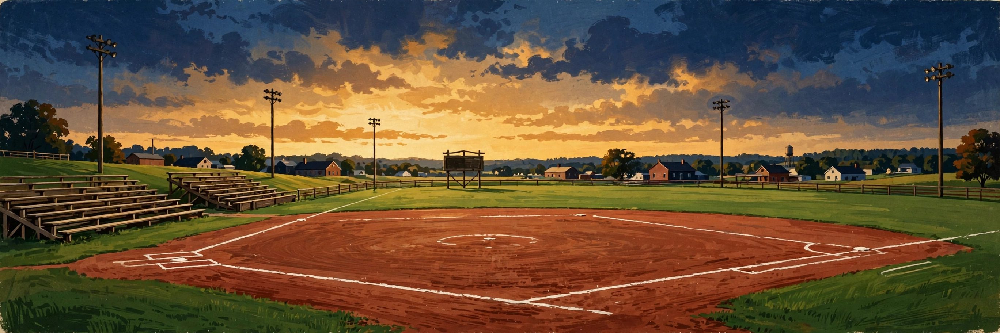

Looking for a team — or looking for players?
Player Pool (player-pool.net) is the private pool where Indiana, Illinois & Ohio parents list a player by number — no name, no address, no phone shown — and hand-approved travel coaches search by age, position, USSSA level, state & county. Coaches search free; parents list for $25/season or $60/year.
Featured gear guides
The buying guides parents ask for most — bats, gloves, cleats, and the training gear that actually gets used. Everything else on the site is one search away, or in the menu above.
More guides: First Season · Rec Leagues · Cost in Indiana · Team Questions · Bat Rules · Tournaments · Cages Near Me · Player Pool · How It Works
117rec leagues
40counties covered
20cages & facilities
222027 tournaments